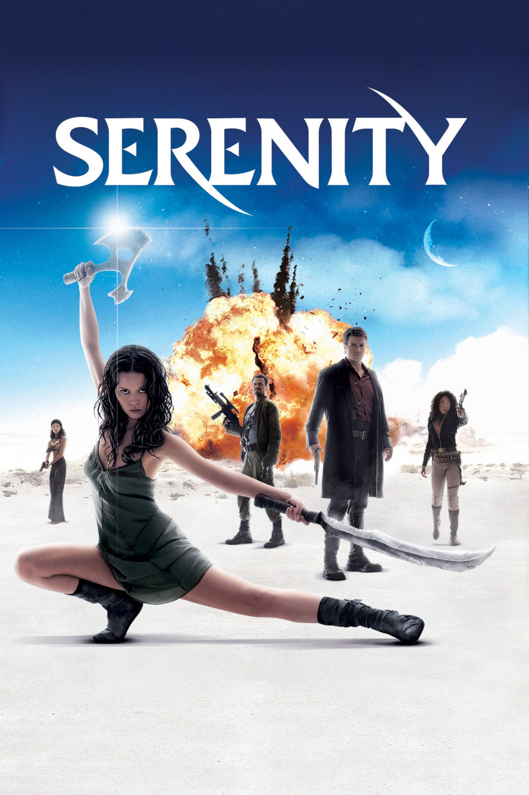

Мировая премьера: 30 сентября 2005
Слоган: Хорошие. Плохие. Злые.
Сюжет: Капитан Мэлкольм Рейнольдс, ветеран Гражданской Галактической войны, теперь всего лишь капитан транспортного корабля "Серенити" с немногочисленным экипажем на борту. Когда Мэл взял на борт пассажиров – молодого доктора и его странную сестру с телепатическими способностями – ни он, ни его товарищи не предполагали, в какую историю ввяжутся. Спасаясь сразу от нескольких могущественных врагов – и от военных сил тоталитарного межпланетного Альянса, и от ужасных Пожирателей-каннибалов, команда корабля даже не догадывается, какая угроза скрывается на борту "Серенити".
Режиссёр: Джосс Уидон
В основе: Телесериал "Светлячок" (США, 2002)
В ролях: |
Натан Филлион | Мэлкольм "Мэл" Рейнольдс |
| Чьюител Эджиофор | Оперативник | |
| Джина Торрес | Зои Уошбёрн | |
| Адам Болдуин | Джейн Кобб | |
| Шон Мехер | Доктор Саймон Тэм | |
| Алан Тьюдик | Хобан "Уош" Уошбёрн | |
| Джуэл Стэйт | Кейуиннет Ли "Кейли" Фрай | |
| Саммер Глау | Ривер Тэм | |
| Морена Баккарин | Инара Серра | |
| Рон Гласс | Пастырь Дерриал Бук | |
| Дэвид Крамхолц | Господин Вселенная | |
| Майкл Хичкок | Доктор Матиас | |
| Сара Полсон | Доктор Кэрон | |
| Ян Фельдман | Минго | |
| Рафаэль Фельдман | Фэнти |
Бюджет: $ 40 млн.
Кассовые сборы в США: $ 26 млн.
Кассовые сборы в мире: $ 39 млн.
Продолжительность: 1 ч. 54 мин.
Рейтинг: 7.8